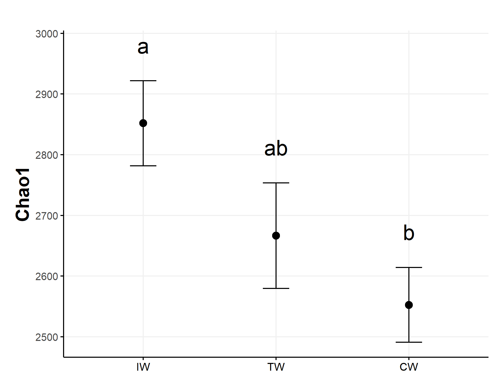
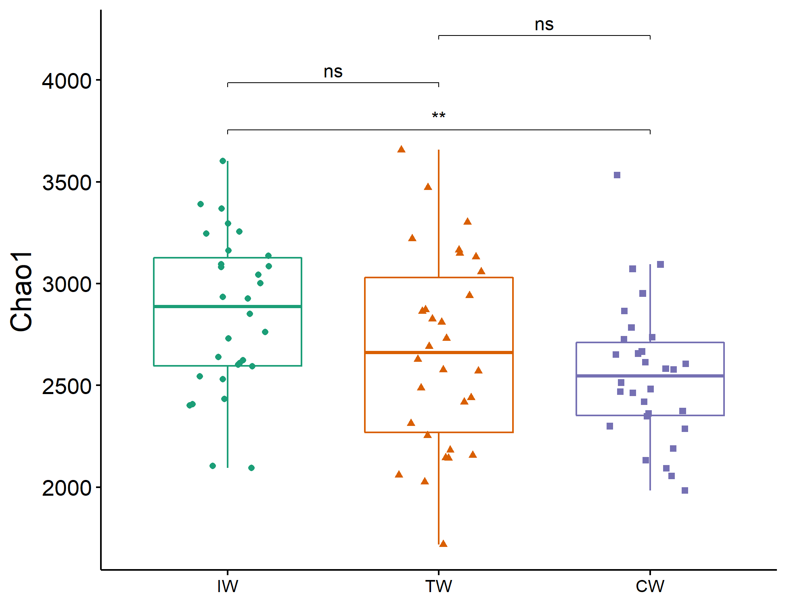
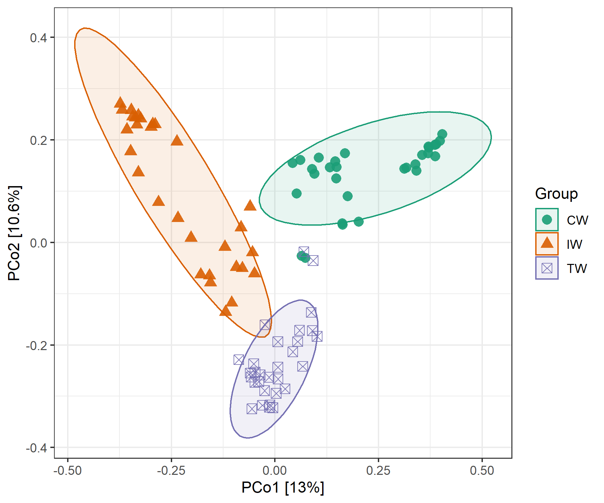
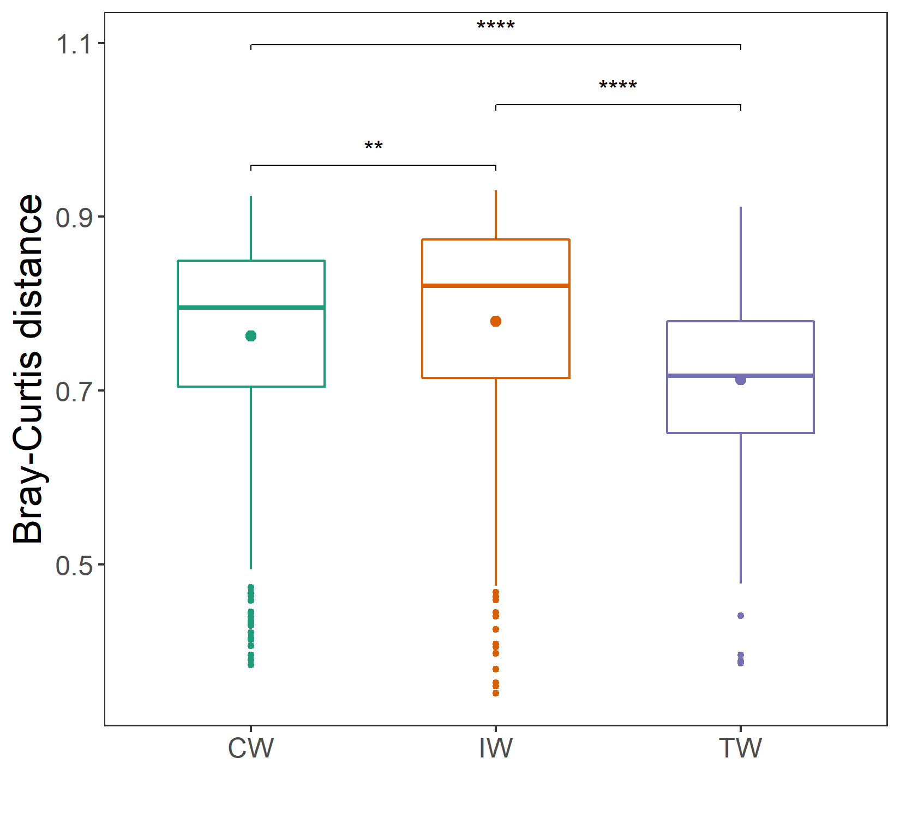
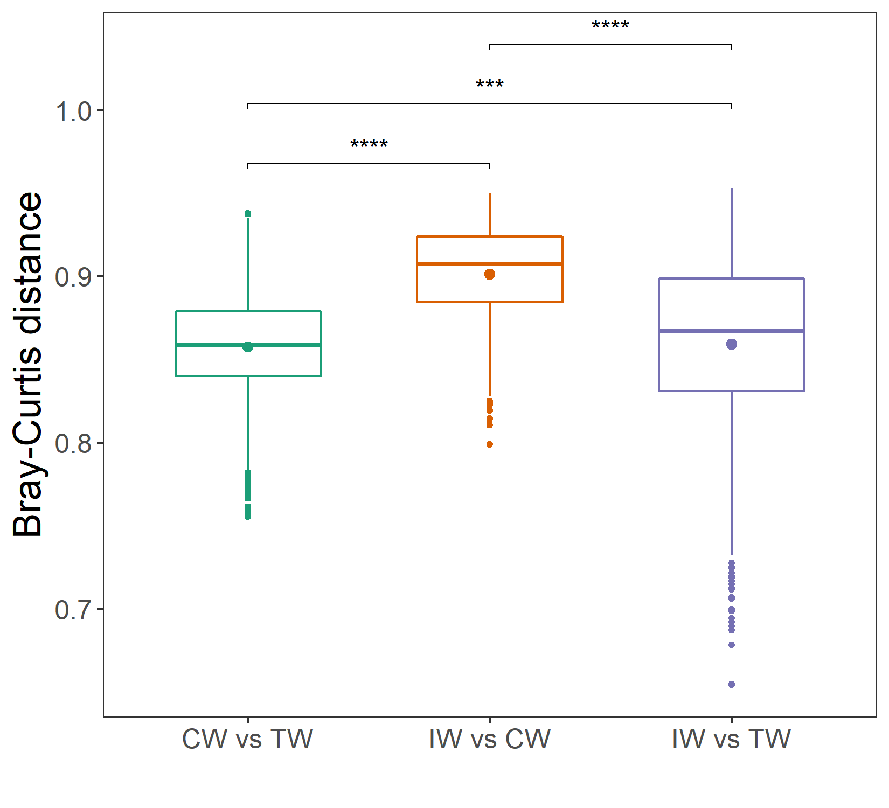
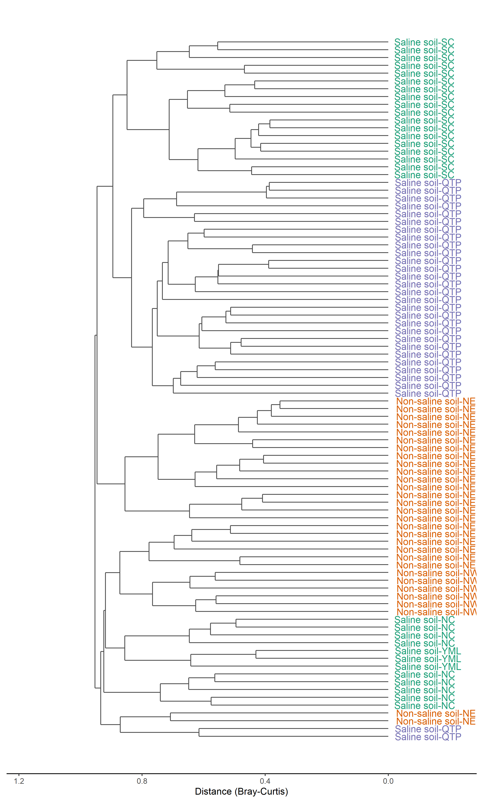

Chapter 5 Diversity-based class
Diversity is one of the core topics in community ecology. It refers to alpha diversity, beta diversity and gamma diversity.
5.1 trans_alpha class
Alpha diversity can be transformed and plotted using trans_alpha class. Creating the object of trans_alpha class can invoke the alpha_diversity data stored in the microtable object.
5.1.1 Example
The trans_alpha object have two data frame: alpha_data and alpha_stat.
t1 <- trans_alpha$new(dataset = dataset, group = "Group")
# return t1$alpha_stat
t1$alpha_stat[1:5, ]## The group statistics are stored in object$alpha_stat ...## The transformed diversity data is stored in object$alpha_data ...| Group | Measure | N | Mean | SD | SE |
|---|---|---|---|---|---|
| CW | Observed | 30 | 1843 | 220.6 | 40.27 |
| CW | Chao1 | 30 | 2553 | 338.1 | 61.73 |
| CW | ACE | 30 | 2716 | 367 | 67.01 |
| CW | Shannon | 30 | 6.308 | 0.5355 | 0.09777 |
| CW | Simpson | 30 | 0.9897 | 0.01305 | 0.002382 |
Then, we test the differences among groups using the KW rank sum test and anova with multiple comparisons.
t1$cal_diff(method = "KW")
# return t1$res_alpha_diff
t1$res_alpha_diff[1:5, ]## The result is stored in object$res_alpha_diff ...| Groups | Measure | Test method | p.value | Significance |
|---|---|---|---|---|
| IW vs CW | Observed | KW | 0.0371 | * |
| IW vs TW | Observed | KW | 0.4553 | |
| CW vs TW | Observed | KW | 0.3912 | |
| IW vs CW vs TW | Observed | KW | 0.155 | |
| IW vs CW | Chao1 | KW | 0.002689 | ** |
t1$cal_diff(method = "anova")
# return t1$res_alpha_diff
t1$res_alpha_diff## Registered S3 methods overwritten by 'klaR':
## method from
## predict.rda vegan
## print.rda vegan
## plot.rda vegan## The result is stored in object$res_alpha_diff ...| Observed | Chao1 | ACE | Shannon | Simpson | InvSimpson | Fisher | Coverage | |
|---|---|---|---|---|---|---|---|---|
| IW | a | a | a | a | a | a | a | b |
| TW | a | ab | b | a | a | a | a | a |
| CW | a | b | b | a | a | a | a | a |
Now, let us plot the mean and se of alpha diversity for each group, and add the duncan.test (agricolae package) result.
t1$plot_alpha(add_letter = T, measure = "Chao1", use_boxplot = FALSE)
We can also use the boxplot to show the paired comparisons directly.
t1$plot_alpha(pair_compare = TRUE, measure = "Chao1", shape = "Group")
The multi-factor analysis of variance is also supported. It is notable that the result res_alpha_diff will be a list instead of a data.frame.
t1 <- trans_alpha$new(dataset = dataset, group = "Group")
t1$cal_diff(method = "anova", anova_set = "Group+Type")
# now the result t1$res_alpha_diff is a list
# see the help document for the usage of anova_set5.1.2 Key points
- trans_alpha$new: creating trans_alpha object can invoke alpha_diversity in microtable for transformation
- cal_diff: anova_set parameter can be used for multi-factor analysis of variance
5.2 trans_beta class
The trans_beta class is developed for the beta diversity analysis, i.e. the dissimilarities among samples. As beta diversity can be defined at different forms(Tuomisto 2010) and can be explored with different ways(Anderson et al. 2011), So we encapsulate some commonly-used approaches according to the research of microbial community ecology(Ramette 2007). Note that the parts related with “Environmental interpretation” are placed into the trans_env class. When needed, the beta_diversity list in microtable object will be invoked for transformation and ploting using trans_beta class. The analysis referred to the beta diversity in this class mainly include ordination, group distance, clustering and manova.
5.2.1 Example
We first show the ordination using PCoA.
# we first create an trans_beta object
# measure parameter can invoke the distance matrix of bray in dataset$beta_diversity
t1 <- trans_beta$new(dataset = dataset, group = "Group", measure = "bray")# use PCoA as an example, PCA or NMDS is also available
t1$cal_ordination(ordination = "PCoA")
# t1$res_ordination is the ordination result list
class(t1$res_ordination)
# plot the PCoA result
t1$plot_ordination(plot_color = "Group", plot_shape = "Group", plot_group_ellipse = TRUE)
Then we plot and compare the group distances.
# calculate and plot sample distances within groups
t1$cal_group_distance()
# return t1$res_group_distance
t1$plot_group_distance(distance_pair_stat = TRUE)
# calculate and plot sample distances between groups
t1$cal_group_distance(within_group = FALSE)
t1$plot_group_distance(distance_pair_stat = TRUE)
Clustering plot is also a frequently used method.
# use replace_name to set the label name, group parameter used to set the color
t1$plot_clustering(group = "Group", replace_name = c("Saline", "Type"))
perMANOVA(Anderson 2001) is often used in the differential test of distances among groups.
# manova for all groups
t1$cal_manova(cal_manova_all = TRUE)
t1$res_manova$aov.tab## The result is stored in object$res_manova ...| Df | SumsOfSqs | MeanSqs | F.Model | R2 | Pr(>F) | |
|---|---|---|---|---|---|---|
| Group | 2 | 6.121 | 3.06 | 10.57 | 0.1955 | 0.001 |
| Residuals | 87 | 25.18 | 0.2895 | NA | 0.8045 | NA |
| Total | 89 | 31.3 | NA | NA | 1 | NA |
# manova for each paired groups
t1$cal_manova(cal_manova_paired = TRUE)
t1$res_manova## The result is stored in object$res_manova ...| Groups | measure | permutations | R2 | p.value | Significance |
|---|---|---|---|---|---|
| IW vs CW | bray | 999 | 0.1595 | 0.001 | *** |
| IW vs TW | bray | 999 | 0.147 | 0.001 | *** |
| CW vs TW | bray | 999 | 0.1556 | 0.001 | *** |
# manova for specified group set: here "Group + Type"
t1$cal_manova(cal_manova_set = "Group + Type")
t1$res_manova$aov.tab## The result is stored in object$res_manova ...| Df | SumsOfSqs | MeanSqs | F.Model | R2 | Pr(>F) | |
|---|---|---|---|---|---|---|
| Group | 2 | 6.121 | 3.06 | 12.01 | 0.1955 | 0.001 |
| Type | 3 | 3.783 | 1.261 | 4.949 | 0.1208 | 0.001 |
| Residuals | 84 | 21.4 | 0.2548 | NA | 0.6836 | NA |
| Total | 89 | 31.3 | NA | NA | 1 | NA |
PERMDISP(Anderson et al. 2011) is also implemented to check multivariate homogeneity of groups dispersions (variances).
# PERMDISP for the whole comparison and for each paired groups
t1$cal_betadisper()## The result is stored in object$res_betadisper ...t1$res_betadisper##
## Permutation test for homogeneity of multivariate dispersions
## Permutation: free
## Number of permutations: 999
##
## Response: Distances
## Df Sum Sq Mean Sq F N.Perm Pr(>F)
## Groups 2 0.04131 0.0206545 4.1682 999 0.021 *
## Residuals 87 0.43110 0.0049552
## ---
## Signif. codes: 0 '***' 0.001 '**' 0.01 '*' 0.05 '.' 0.1 ' ' 1
##
## Pairwise comparisons:
## (Observed p-value below diagonal, permuted p-value above diagonal)
## CW IW TW
## CW 0.4690000 0.063
## IW 0.4621193 0.005
## TW 0.0566190 0.00503195.2.2 Key points
- trans_beta$new: creating trans_beta object with measure parameter can invoke beta_diversity in microtable object for transformation
- cal_ordination(): PCoA, PCA and NMDS approaches are all available
- cal_manova(): cal_manova function can be used for paired comparisons, holistic test and multi-factor test
- plot_group_distance(): hide_ns and pair_compare_filter_select parameters can be used to control the significance labels shown in the plot